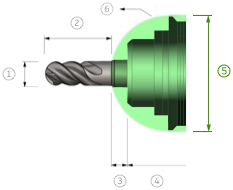

Specifies a substitutive diameter of the machine head. It is a diameter of a simplified head that contains the shaft and holder.
| Tool diameter | |

|
Shoulder length |

|
Shaft |

|
Holder |

|
Head diameter |
| Head |
